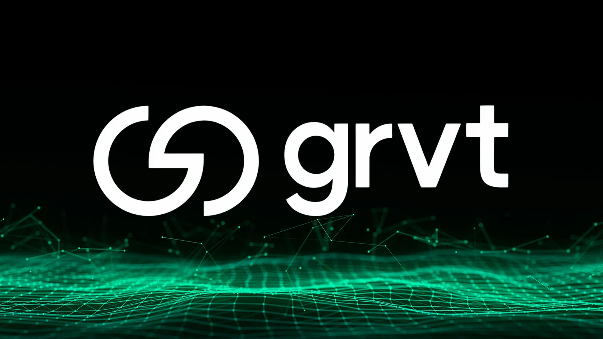

Free AI Website Software
GRVT can refer to a few different things depending on context, but the most common meaning people ask about is GRVT as a cryptocurrency ticker (often associated with the Gravity Finance / Gravity ecosystem naming). Because tickers and project names can overlap, I want to confirm what you mean.
Quick question (so I don’t explain the wrong thing):
Are you asking about GRVT the crypto token, or something else (a company, app, stock, or a crypto term)?
Meanwhile, here’s a clear, beginner-friendly explanation of what GRVT as a token/crypto project usually means—along with how to verify the exact project you’re looking at.
What “GRVT” usually is (when used as a crypto ticker)
In crypto, a lot of assets have short tickers (like BTC, ETH, or SOL). GRVT is one such ticker, which typically identifies:
a token deployed on a blockchain (such as Ethereum, BNB Chain, Polygon, etc.)
a project with a purpose (governance, staking, rewards, yield, payments, or other utilities)
a community and set of smart contracts that define how the token works
So when someone says “GRVT,” they often mean:
the token itself (the tradable asset), and/or
the platform or ecosystem behind the token.
How GRVT tokens work (conceptually)
Most crypto tokens fall into categories. GRVT may be one or more of these:
1) Utility token
The token may be used to access something, such as:
paying fees within an app
using a service or feature
getting discounts or rewards
2) Governance token
Sometimes token holders can vote on:
changes to the protocol
upgrades
treasury spending
rules for rewards or staking
3) Staking / rewards token
A token may be used in staking or yield systems:
you lock GRVT for rewards
rewards might be paid in GRVT or another token
the system may use “staking pools,” “liquidity pools,” or “earn” mechanisms
4) Collateral / incentives token
Some tokens are used to stabilize or incentivize other assets:
pairing with another token
providing incentives for liquidity
supporting market-making programs
Without looking up the specific GRVT contract and docs, I can’t guarantee which model applies. But these are the most common roles for tokens with a ticker.
Why people care about GRVT
People typically get interested in tokens like GRVT for reasons such as:
Potential returns: If rewards, staking, or ecosystem growth exists, value may increase.
Ecosystem access: Some projects require tokens to participate.
Community governance: Holders can influence decisions.
Incentives: Protocols may reward early users for supplying liquidity or staking.
That said, crypto tokens also come with major risks (see below).
The risks you should know (important)
Even if GRVT is legitimate, tokens can carry risks such as:
Smart contract risk
Bugs, exploits, or design flaws can lead to loss of funds.
Token price volatility
Token value can swing dramatically.
Liquidity risk
If the token has low trading volume, selling can be difficult or expensive.
Centralization and admin risk
Some tokens depend on privileged keys (team control, upgrade keys, admin permissions).
Inflation / emissions
If new tokens are constantly minted, it can pressure price.
Scams and impersonation
Fake tokens with similar names/tickers can appear.
Because these risks are real, it’s crucial to verify the exact contract address and official sources before buying or interacting.
How to identify the “real” GRVT you mean
If you want to be sure, check these steps:
Find the contract address
Don’t rely only on the ticker text.
Each token has a unique smart-contract address.
Check official project links
Look for the project’s official website and verified social accounts.
Confirm the token address matches.
Look for reputable explorers
Use blockchain explorers (like Etherscan for Ethereum) to confirm:
token name/symbol
holder counts
contract verification status
recent transactions
Check liquidity and trading pairs
Where is it traded?
Is it on major exchanges or mostly on decentralized exchanges?
Read the token documentation
Token purpose (utility/governance/staking)
tokenomics (supply, emissions, vesting)
risks and audit information (if any)
If you share the contract address or the exchange/pair you saw, I can tell you what it appears to be and how it likely works.
What GRVT might be used for (common patterns)
Since many tokens use similar mechanics, GRVT may be involved in one or more of these:
staking GRVT to earn rewards
governance voting for protocol changes
earning yield by providing liquidity (often involves LP tokens)
using GRVT to access a platform feature
receiving GRVT as a reward for activity
To be accurate for your GRVT, I need the project details or contract address.
If you meant something else by “GRVT”
“GRVT” could also appear as:
an acronym for a company or product
a ticker for a different asset on another platform
a shorthand in a specific community
So confirming the context is the safest way.
Free AI Website Software